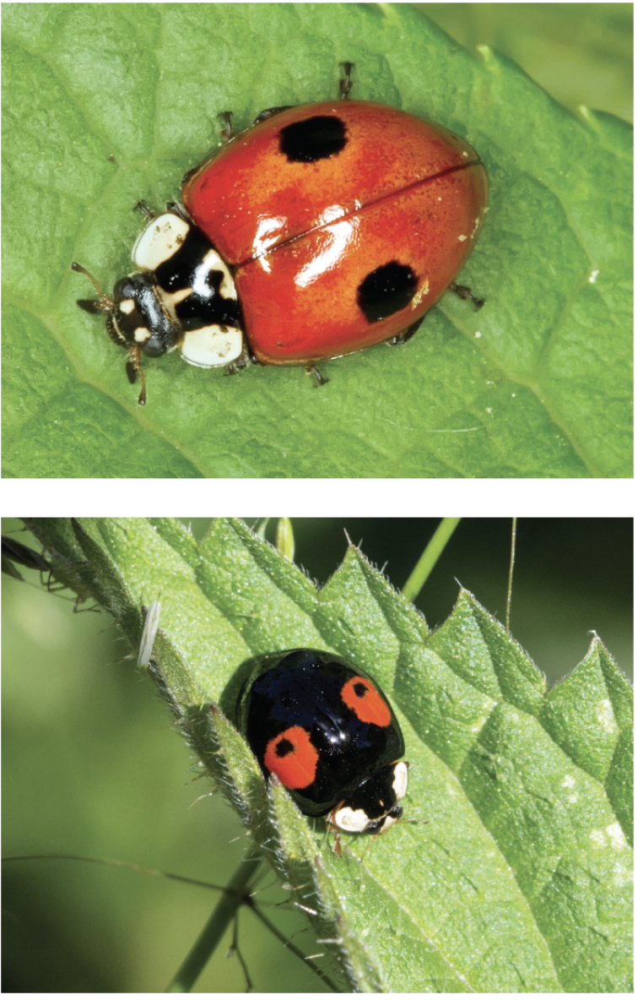
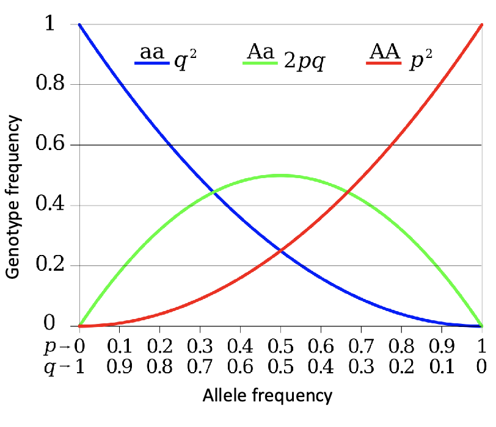
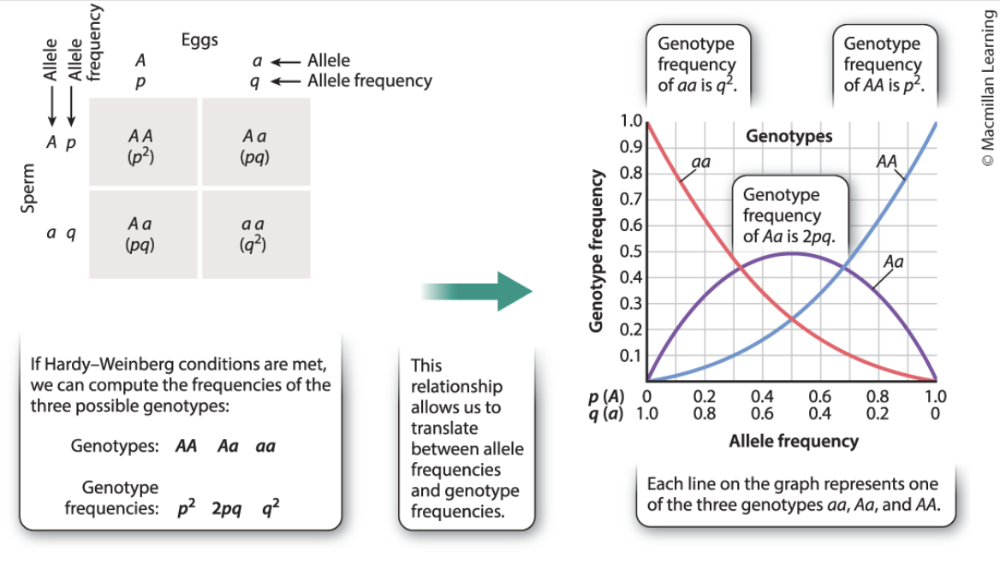
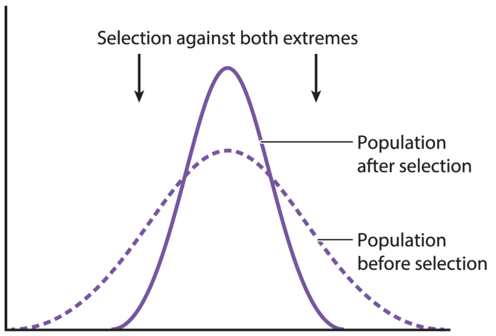
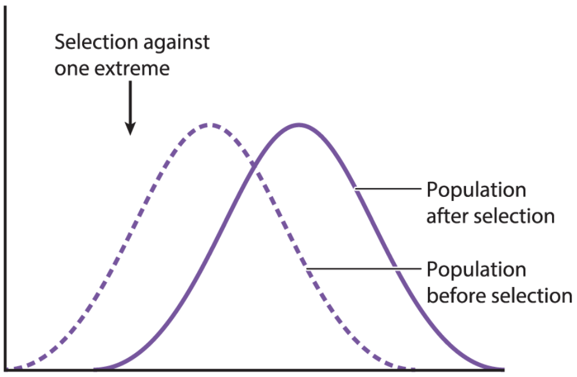
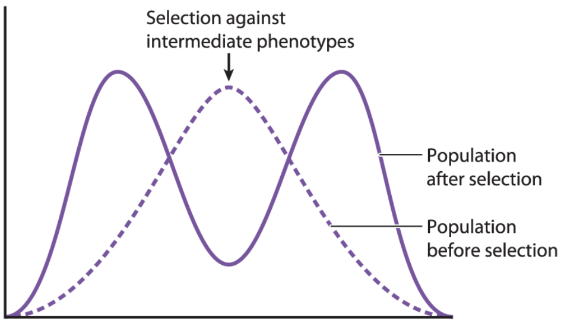

Life displays great diversity with 10 million or more species. The unity and the diversity of life are explained by evolution.
Introduction to Evolution
What is Evolution?
Basic Definition:
- Change through time
- Decent with motification
- Darwin’s “Pangenesis”: proposal that each part of the body continually emits small particles called gemmules that contribute to the heritable information to the gametes
Biological Definition:
- Change in allele or genotype frequencies in populations over time
Note:
- Evolution occurs in populations
- Evolution does not occur in an individual
Adaptive Radiation
- Organism diversify rapidly from an acestral species when a change in the environment makes new resources available, creates new challenges, or opens new environmental niche
- e.g. Hawaiian Drosophila radiation: alleles and genotypes of Drosophila shift through times as volcanic islands form, are observed through phenotypes, and evolve by natural selection
How does Evolution affect our lives?
Penicillin
- Product of Penicillium mold (Alexander Fleming, 1928)
- Represents an evolved response to bacteria
- First antibiotic drug based on a naturally occuring substance
- Four years of of use -> Staphylococcus strains resistant went up to 14%
- By 1950, resistant became more than 50%
Penicillin: today
- Continue to develop new strains of penicillin
- Identify and locate resistance
- Need to minimize dependence on antibiotics
- Resistant bacteria still kills 30,000 to 40,000 Americans each year
COVID-19
- Mutations lead to variations, which can exceptionally be problematic
- Properties of variants: virulence , dispersal, symptoms
Micro vs Macro
Microevolution
- Changes within a species
- Caused by natural selection or evolutionary forces
- Depends on heritable variation in genetics of a population
- Traits can be under strong natural selection e.g. antibiotic resistance
Macroevolution
- Changes between species
Microevolution
Phenotypic Variation
Heritable variation in appearance and/or function
-
Qualitative variation:
- Discrete characteristics
- Polymorphism: distinct variatns of character
- e.g. two-spot ladybug
-
Quantitative variation:
- Continuous and measurable characteristics
- Controlled by multiple genes
- e.g. height
Examples of Phenotypic Variation
- European Garden Snails vary in colour as there is no selective pressure acting on it. In a hypothetical situation, the population can converge towards a brown-coloured snails if the predators evolve to detect the bright colours better.
- Bahamian Land Snails are under a strong selective pressure, having only a few, non-distinguishable phenotypic variation.
Factors of the Phenotypic Variation
- Phenotypic variation is due to genetics (genotype), environment, or both
- Only genetic component of phenotype are heritable
Phenotypic Variation Experiment
- Keep Genetics constant (e.g. clone), Vary Environment
- The clour of Hydrangeas vary depending on the pH of soil (acidic: blue, basic: pink)
- Breeding and Selection
- Important as evolution can only act on heritable variation
- Artificially selected mouse with higher activity level (experimental lines) and compared with control lines (no artificial selection) -> found out that there was underlying genetic variation for activity level
- Mandelian genetics
Genetic Variation
Causes
- New alleles from mutations
- Recombination: from crossing over, independent assortment, random fertilization
Types
- Germ-line mutations: occur in the reproductive cells -> inherited
- Somatic mutations: occur in the non-reproductive cells -> does not get inherited
Population Genetics
The study of patterns in genetic variation in populations
- Individuals within a population must differ genetically for evolution to occur
- Individuals within a population are closely related to each other than members of other populations
- Different populations of the same species may be isolated from each other such that gene flow is rare
Gene Pool
- Sum of all alleles at all gene loci in all individuals within a population
- Characterizes a population’s genetic makeup
- Used to identify the genotypes and calculate genotype frequencies
- Given that species is diploids and have two alleles of each gene, we can calculate allele frequencies
Evolutionary Agents
Genotypes and Alleles
- Genotype frequency: the % of individuals in a population with a specific genotype -> shows the distribution of allele combinations in a population
- Allele frequency: the % of all copies of a certain gene in a population that carry a specific allele -> shows the distribution of genetic variation in a population
- Evolution is measured as changes in allele frequencies in populations
Computing Frequencies
Notations $$p=\text{frequency of one allele}$$ $$q=\text{frequency of another allele}$$ $$p+q=1 \text{ (normalization)}$$
Genotype Frequencies of the Next Genetation
Assuming that the population is in equilibrium for the C locus, we have $$(p+q)\times(p+q)=p^2+2pq+q^2$$ where $$p^2= (\text{frequency of }C^RC^R)$$ $$2pq= (\text{frequency of }C^RC^W)$$ $$q^2= (\text{frequency of }C^WC^W)$$
Example
- Conisder Snapdragons that exhibit incomplete dominance with distinctive phenotype of heterozygotes
- Let $p=0.7, q=0.3$
- Then, expected genotype frequencies in the next generation are $$p^2= 0.7 \times 0.7 = 0.49$$ $$2pq= 2 \times 0.7 \times 0.3 = 0.42$$ $$q^2= 0.3 \times 0.3 = 0.09$$
- Predicted countings are 490, 420, and 90.
- Actual countings are 410, 423, and 167, respectively
- Thus, we can conclude that one of the Hardy-Weinberg principles is violated and the population is evolving with the selective force towards the $C^W$ allele.
The Hardy-Weinberg Principle
- Null model: assume the absence of evolutionary change and compare it to the real population
- Hardy-Weinberg Equilibrium: describes a population where the frequencies of alleles and genotypes remains constant from generation to generation, provided that only Mandelian segregation and recombination of alleles are at work
- The Hardy-Weinberg Equilibrium occurs when the following conditions are met:
- No mutation
- No gene flow: population is closed to migration from other populations
- Infinite population
- No natural selection: all genotypes survive and reproduce equally
- Random mating: individuals mate randomly with respect to genotypes
Microevolutionary Agents
- Mutation: a heritable change in DNA -> introduces new genetic variation into population
- Rare event, significant over long time scales
- Deleterious or lethal mutations are harmful but may persist if recessive
- Neutral mutations are neither harmful or helpful e.g. slient mutation that does not alter amino acids
- Advantageous mutations benefit an organism e.g. novel host adaptation
- Gene flow: change in allele frequencies as individuals join a population and reproduce -> may introduce genetic variation from another population
- may be the movement of individuals e.g. seeds or gametes e.g. pollen
- Genetic drift: random changes in allele frequencies caused by chance events -> reduces genetic variation (can eliminate in small populations)
- Population bottelneck: caused by catastrophic factors: diseases, starvation, drought -> reduce genetic variation
- Founders effect: migrating population may not have the entire genetic variation of the parent population
- Natural selection: differential survivorship or reproduction of individuals with different genotypes -> one allele may increase in frequency
- Relative fitness is the contribution an individual makes to the gene pool of the next generation relative to the contribution of others
- Natural selection can be measured by fitness
- Directional selection: favours individuals near one end of phenotypic spectrum
- Stabilizing selection: favours individuals with intermediate phenotypes
- Disruptive selection: favours individuals with extreme phenotypes
- Nonrandom mating: choice of mates based on their phenotypes and genotypes -> does not directly affect allele frequencies but prevent genetic equilibrium
Variation in Populations
Why is Variation Beneficial for Evolution?
- Variation in populations plays a key role in natural selection
- Natural seletion depicts that the variants with characteristics that are best applicable for an environment in terms of growth and reproduction will contribute the most to the next generation. e.g.
- Farmers choosing seeds with high yield and resistency to drought and disease
- Breeders developing different breeds of dogs e.g. terriors, huskies (Selection under domestication)
- Rise in antibiotic resistance of disease-causing microorganisms
How does Variation Occur?
- Environmental Selection
- Occurs due to differences in the environment e.g.
- Exposure to sunlight
- Exposure to female codling moth (its egg develops into a caterpillar and eats its way into the fruit)
- Genetic Variation
- Occurs due to differences in the genetic material e.g.
- Types of apples with different tastes and color (green Granny Smith, yellow Golden Delicious, scarlet Red Delicious)
- Individual apples within a tree (due to unique combinations of genes through fertilizaion process)
- Stems from genetic mutations
- Mutations arise from:
- Random errors when passing genetic materials i.e. during DNA replication
- Environmental factors e.g. UV radiation, cigarette smoke
- Harmful variations die out overtime
- Beneficial veriations thrive
- Neither can persist overtime
Evolutionary Trees
- Evolution can be illustrated using a tree diagram as following. Branches represent different groups or organisms and nodes indicate the most recent common ancestor

- Tree of Life: the full set of evolutionary relationships along all organisms

- Most branches on the tree of life consist of microorganisms
- Despite that the tree shows the origin of eukarya to be archaea, biologists think it is derived by symbiosis between an archaeon and a bacterium
- The order of life-forms is determined by fossils
Evolution through Experiments
Can Evolution be Demonstrated in the Laboratory?
-
Background: In 1988, the biologist Richard Lenski grew E.Coli on a medium with imited amounts of glucose to observe whether they improve on their ability to metabolize glucose.
-
Hypothesis: Any bacterium wiht a random mutation that increases its ability to take up glucose will reproduct at a faster rate than the other, thereby demonstrating evolution in a bacterial population.
-
Experiment: Cells of E.Coli are frozen at -80°C are kept suspended in animation, surviving without any biological processes. Starting bacteria are labeled Ancestral and the bacterial populations taken from the environment with limiting amounts, every 500 generations, of glucose were labeled Descendant. Then, compared the rate of growth of these two populations.
-
Results: The growth rate of the Descendant bacterial populations became much steeper than the rate of the Ancestral in the given environment.
-
Conclusion: This experiment demonstrates that E.Coli evolved an improved ability to metabolize glucose overtime.
-
Follow-up: Later studies discovered differences in genetic makeup between Ancestral and Descendant bacterial populations.
-
Application: Development of beneficial strains of microorganisms. e.g.
- Removing toxins from lakes and rivers
- Understand how pathogens develop resistance to drugs
Genetic Variation
In spite of a high degree of phenotypic variation, humans rank low in terms of overall genetic variation. Humans differ from each other by 1 DNA base per 1000 (99.9% identical), whereas fruit flies differ by 10 DNA bases per 1000 (99% identical).
Note that both genotype and environment contribute to the phenotype of an individual, which makes it hard for us to compare genetic variation directly. We can achieve this through DNA sequencing.
Population Genetics
What is a species?
- A group of individuals that are capable of sharing alleles
- Each individual represents different combinations of alleles drawn from the gene pool
What is Population Genetics?
- The study of genetic variation in natural populations
- This discipline answers the following questions:
- Which factors determine the amount of variation in a population and in a species?
- Why are humans genetically less variable than fruit flies?
- Which factors affect the distribution of particular variations?
Sources of Genetic Variation
-
Mutation: generates new alleles
Mutation by effective range
- Somatic mutation: occur in the body’s tissues in nonreproductive cells
- Only affects one individual
- e.g. skin cancer due to somatic mutation is not inherited
- Germ-line mutation: occur in the reproductive cells i.g. sperms, eggs
- Appear in every cell of an offspring
Mutation by effects on an organism
- Neutral mutation: despite every human naturally having around 60 new mutations, most of them have little to no effect as a large part of genome consists of noncoding DNA
- Deleterious mutation: most of mutations occuring in protein-coding regions have a harmful effect
- Advantageous mutation: delivers a beneficial effect, rarely occurs
- Somatic mutation: occur in the body’s tissues in nonreproductive cells
-
Recombination: shuffles mutations and generates new permutations, followed by segregation of homologous chromosomes during meiotic cell division
Measuring Genetic Variation
The goal of population genetics is to infer the evolutionary process from patterns of genetic variation in nature. Thus, the rates of occurrence of alleles in populations play a key role.
Allele Frequencies
What is Allele Frequency?
- The allele frequency of an allele x is the number of x’s present in the population divided by the total number of alleles e.g.
- Given 50% aa, 25% Aa, 25% AA, an allele frequency of a is $$(2 \times 50) + 25 = 125, \frac{125}{200}=62.5%$$ an allele frequency of A is $$25 + (2 \times 25) = 75, \frac{75}{200}=37.5%$$ Note that the denominator is $200$ as pea plant is diploid
Measurments of Genotype and Allele Frequencies
Observable Traits
- Measurment through observable traits is possible if phenotype = genotype
- Rarely observed due to large number of encoding genes for a trait and because not only genotypes, but also environment affects phenotypes
- Until 1960s, we were only able to study phenotypes that are encoded by a single gene e.g. ABO blood group, colouring of two-spot ladybug Adalia bipuncatata

Gel Electrophoresis
- Gel Electrophoresis separates segments of proteins according to their charge and their size
- An individual with heterozygotic mutation that eventually alters a protein will produce two distinct bands in the gel
- Limiation: can detect only mutations that alter protein structures
DNA Sequencing
- Capable to detect silent mutations
- How to:
- Collect a population sample
- Count the number of occurrences of a given mutation
- e.g. Consider single nucleotide polymorphism
Evolution and Hardy-Weinberg Equilibrium
Evolution
What is Evolution?
- Evolution is a change in the frequency of an allele or a genotype throughout generations. Note evolution can occur without a change in allele frequency if genotype frequency changes
Populations evolve, not individuals
Hardy-Weignberg Equilibrium
When does evolution come to halt?
- Changes do not occur once Hardy-Weinberg equilibrium is reached
- Hardy-Weignberg equilibrium specifies the relationship between alleleFrequencies
and genotypeFrequencies
when the following conditions are met:
- No Nautral Selection: No difference in the survival and reproductive success of individuals with different genotypes e.g. Given a is a lethal recessive mutation, all aa individuals will die -> decrease in frequency of a allele -> increase in frequency of A allele, representing the survival success
- Infinite Population: this equilibrium holds only for infinitely large populations to neglect genetic drift
- No Gene Flow: Populations are not added to or subtracted from by migration
- No Mutations: e.g. If A alleles mutate into a alleles, there still exist changes in genetic makeup
- Indiscriminate Mating: mate choice made regardless of genotype
Hardy-Weignberg Principle
- To ask whether a population is evolving, we can first determine what the genetic makeup of the population would look like if it were not evolving at that locus
- Null model can be compared with a real population

Example of genotype frequencies
- Hypothesis: Hardy-Weinberg equillibrium has met
- Consider 70 A alleles and 30 a alleles. Then, $$\mathbb{P}(\text{AA homozygote})=0.7 \times 0.7 = 0.49$$ $$\mathbb{P}(\text{Aa heterozygote})=(0.7 \times 0.3) + (0.3 \times 0.7)=0.21 + 0.21 = 0.42$$ $$\mathbb{P}(\text{aa homozyote})=0.3 \times 0.3 = 0.09$$
Generalization of frequency prediction
-
Suppose Hardy-Weignberg conditions are met (no change in allele and genotype frequencies). Let
- $p=\text{frequency of } A$
- $q=\text{frequency of } a$
- $p+q=1$ (normalization)

Then we can predict the genotype frequencies in the next generation as the following: $$\mathbb{P}(\text{AA})=p^2$$ $$\mathbb{P}(\text{Aa})=2pq$$ $$\mathbb{P}(\text{aa})=q^2$$
-
Even if Hardy-Weignberg conditions are not met, allele frequencies can be determined given genotype frequencies e.g. $\text{frequency of }A=p=\sqrt{p^2}=\sqrt{\mathbb{P}(AA)}$
Significance of Hardy-Weignberg equillibrium
- When it is upheld, it provides a means of converting between allele and genotype frequencies
- When it is not upheld, we can infer that evolution has occured in that population (further investigation is required to find the mechanism behind it)
Natural Selection
- Deterious mutations are eliminated and have no long-term evolutionary impact
- Advantageous mutations result in adaptation to the environment over time
Adaptation
Relation between Adaptation and Natural Selection
- Darwin explained adaptation through natural selection
- Through On the Origin of Species in 1859 by Darwin brought both evolution and natural selection to public attention
Fitness
What is Fitness?
- Fitness is a relative measure of the ability of an individual to survive and reproduct in a particular environment
- i.e. the extent to which the individual’s genotype is represented in the next generation
- e.g. Consider a gazelle that runs 25 kph. In a herd of gazelle with 20 kph, this one has a high fitness. In a herd of gazelle with 30 kph, this one has low fitness.
Relation between Fitness and Natural Selection
- Natural selection over generations increases the overall fitness of a population
Types of Natural Selections
Positive vs Negative
- Positive Selection: natural selection that increases the frequency of an advantegous allele
- Negative Selection: natural selection that decreases the frequency of a deletrious allele
- Human genetic disease still arises as recessive alleles are not completely eliminated through natural selection
Balancing Selection
- Balancing Selection: natural selection that acts to maintain two or more alleles of a given gene in a population
- e.g. heterozygote advantage illustrated by human populations in Africa affected by malaria: a heterozygote AS with A, a normal hemoglobin allele and S, a sickle-cell allele is preferred as sickle-cells are effective at fighting for malaria but also can be fatal if excessive due to capillary blockage
Modes of Selection
- Stabilizing Selection: maintains the status quo and acts against extremes e.g. human birth weight: fatal if a baby is very small or very big

- Directional Selection: a form of selection that results in a shift of the mean value of a trait in a population over time e.g. size of bills of the birds

Artificial Selection is a form of directional selection - Disruptive Selection: a form of selection that operates in favour of extremes and against intermediate forms, selecting against the mean e.g. Apple maggot flies (Rhagoletis pomonella): one group feeds on apple trees, the other group on hawthorn trees due to the difference in the timing of fruiting

Sexual Selection
- Sexual Selection: a form of selection that promotes traits that increase an individual’s access to reproductive opportunities
- Intrasexual Selection: a form of sexual selection involving interactions between individuals of on sex e.g fighting ability in males to compete other males
- Intersexual Selection: a form of sexual selection involving interaction between males and females e.g. bright colors in males to attract females
Terminologies
niche: the position of a species within an ecosystem, describing both the range of conditions necessary for persistence of the species, and its ecological role in the ecosystem
virulence: the quality of being poisonous or injurious to life
population: individuals of species at same time and same place, interbreed, producing fertile offspring
gene pool: all the alleles present in all individuals in a population or in a species e.g. alleles for skin colour, hair type, eye colour, etc
populations: all the individuals of a given species that live and reproduce in the same geograhpical area; one of several interbreeding groups of organisms of the same species living in the same geographical area
polymorphism: variable nucleotide positions
lethal: sufficient to cause death
genetic drift: a random change in the frequency of an allele due to the statistical effects of finite population size
allele frequency: commonndess or rarity of each allele in the gene pool assuming individuals are diploid and both gametes contribute to the production of offspring
herd: a social group of certain animals of the same species
heterozygote advantage: a form of balancing selection in which the heterozygote’s fitness is higher than that of either of the homozygotes resulting in selection that ensures that both alleles remain in the population at intermediate frequencies